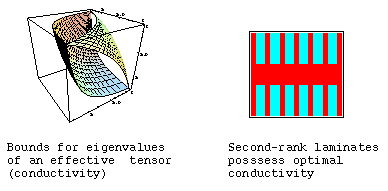
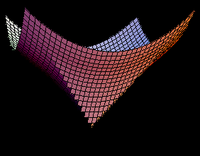

Quasiconvexity, Bounds
- Definitions of quasiconvexity, Null-Lagrangians.
- Minimizing sequences. Laminates
- Translation method
- Weierstrass test and Minimal extensions. Fields in optimal structures.
|

|
G-closures.
- The technique for bounds of G-closures
- Bounds on conducting constants. Polycrystals
- Bounds on complex properties
- Several materials
- Bounds on elastic moduli. Elastic polycrystals.
|

|
Variational problems for elastic structures.
- Optimization of stiffness
- Optimization of the mean stiffness
- Optimization of eigenvalues
|

|

|
Various problems of structural optimization.
Optimization of single-loaded system by arbitrary criteria
Min-max problems of optimization: load versus structure
Optimization and bio-materials. What does Nature want?
|